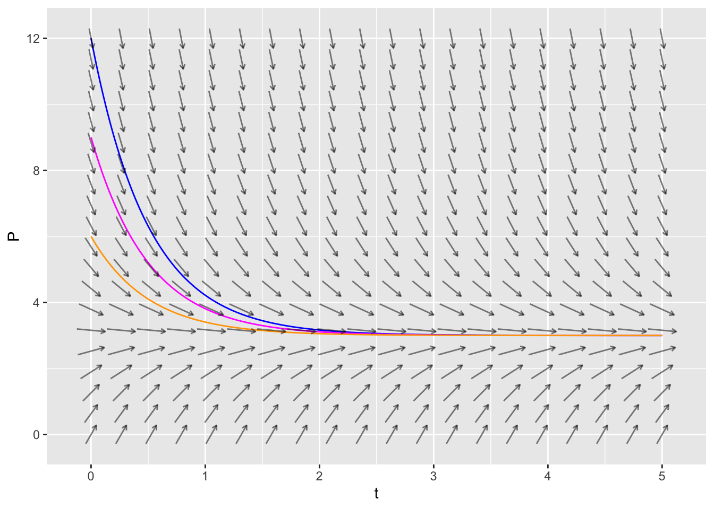
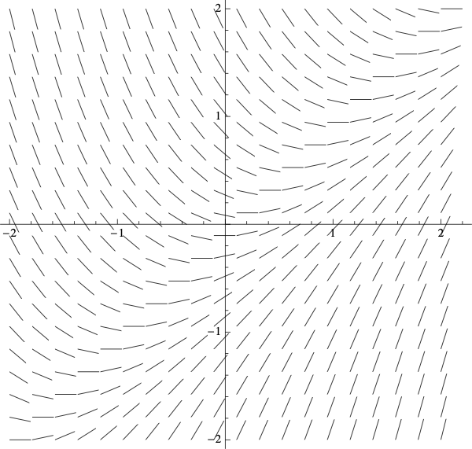
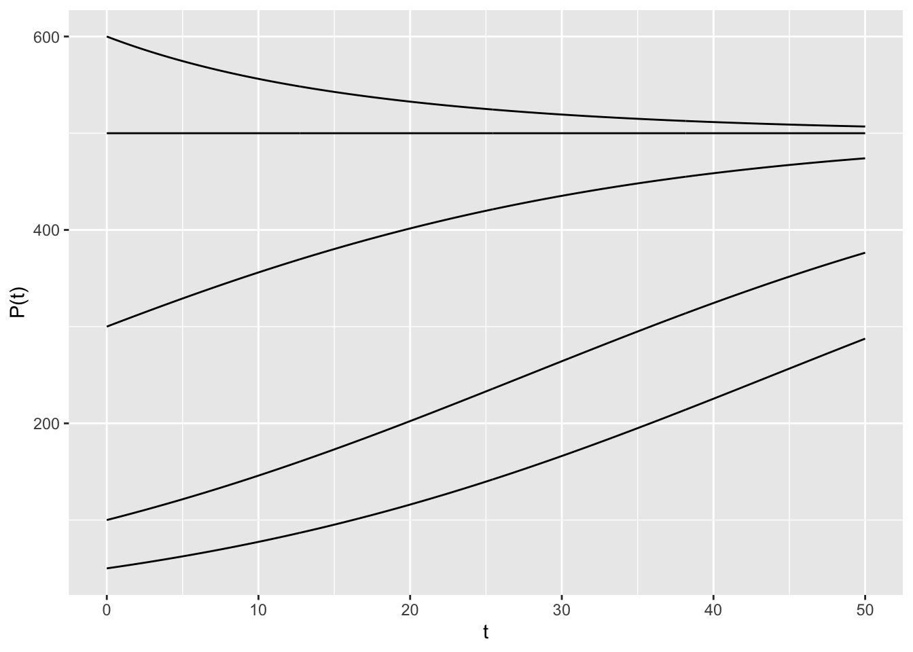

suppressPackageStartupMessages(library(mosaicCalc))30 Slope Fields
30.1 Rundown
Learning goals
- Explain what a slope field is.
- Draw trajectories on a slope field and describe the dynamics of those solution curves.
- Use a slope field to determine the long-term behavior of a solution curve.
- Match a slope field to its differential equation.
30.1.1 Creating a Slope Field in RStudio
The mosaicCalc package has a vectorfield_plot function that we use to create a slope field. So we need to make sure that this package has been loaded into RStudio.
Here is the code to create the slope field for \[ \frac{dP}{dt} = 6 - 2 P \] on \(0 \leq t \leq 4\) and \(0 \leq P \leq 8\).
dPdt = makeFun(6 - 2*P ~ P)
tmin = 0
tmax = 4
Pmin = 0
Pmax = 8
###########
tscaled = (Pmax-Pmin)/(tmax-tmin)
vectorfield_plot(t ~ tscaled, P ~ dPdt(P),
domain(t=tmin:tmax, P=Pmin:Pmax))30.1.2 Creating a Trajectory in RStudio
The mosaicCalc package also has a traj_plot function that plots a solution curve to a differential equation through a given initial point.
Here is the code to plot the trajectory starting at \(P(0)=6\) for the differential equation \(\displaystyle{\frac{dP}{dt} = 6 - 2 P}\). In the code below, the nt parameter indicated the number of “tick marks” to use along the trajectory.
dPdt = makeFun(6 - 2 * P ~ P)
Pstart = 6
tmin = 0
tmax = 5
numtick = 5
#################
dyn = makeODE( dP ~ dPdt(P) )
soln = integrateODE(dyn, domain(t=tmin:tmax), P=Pstart)
traj_plot(P(t) ~ t, soln, nt=numtick) Here is code that plots multiple trajectories, each for a different initial value of \(P\). We set numtick=0 so that we don’t have any tick marks.
dPdt = makeFun(6 - 2 * P ~ P)
tmin = 0
tmax = 5
numtick = 0
#################
dyn = makeODE( dP ~ dPdt(P) )
soln1 = integrateODE(dyn, domain(t=tmin:tmax), P=12)
soln2 = integrateODE(dyn, domain(t=tmin:tmax), P=9)
soln3 = integrateODE(dyn, domain(t=tmin:tmax), P=6)
traj_plot(P(t) ~ t, soln1, color='blue', nt=numtick) %>%
traj_plot(P(t) ~ t, soln2, color='magenta', nt=numtick) %>%
traj_plot(P(t) ~ t, soln3, color='orange', nt=numtick)In fact, we can get fancier by making a single plot that has a trajectory for \(P(0)=6\) along with the vector field.
dPdt = makeFun(6 - 2 * P ~ P)
Pstart = 6
tmin = 0
tmax = 5
Pmin = 0
Pmax = 8
numtick = 0
############################
dyn = makeODE( dP ~ dPdt(P) )
soln = integrateODE(dyn, domain(t=tmin:tmax), P=Pstart)
tscaled = (Pmax-Pmin)/(tmax-tmin)
traj_plot(P(t) ~ t, soln, color="blue", nt=numtick) %>%
vectorfield_plot(t ~ tscaled, P ~ dPdt(P) , domain(t=tmin:tmax, P=Pmin:Pmax))
Want to plot three trajectories and the vector field as well? Sure, why not?
dPdt = makeFun(6 - 2 * P ~ P)
tmin = 0
tmax = 5
Pmin = 0
Pmax = 12
numtick = 0
#################
dyn = makeODE( dP ~ dPdt(P) )
soln1 = integrateODE(dyn, domain(t=tmin:tmax), P=12)
soln2 = integrateODE(dyn, domain(t=tmin:tmax), P=9)
soln3 = integrateODE(dyn, domain(t=tmin:tmax), P=6)
tscaled = (Pmax-Pmin)/(tmax-tmin)
traj_plot(P(t) ~ t, soln1, color='blue', nt=numtick) %>%
traj_plot(P(t) ~ t, soln2, color='magenta', nt=numtick) %>%
traj_plot(P(t) ~ t, soln3, color='orange', nt=numtick) %>%
vectorfield_plot(t ~ tscaled, P ~ dPdt(P) , domain(t=tmin:tmax, P=Pmin:Pmax))
30.2 Activities
30.2.1 Match the Slope Field
Match each of the following differential equations with its slope field. Hint: start by setting \(\frac{dy}{dx} = 0\) and solving for \(y\). The slopes along the resulting curve will always be horizontal.
- \(\displaystyle{\frac{dy}{dx}=xy}\)
- \(\displaystyle{\frac{dy}{dx}=\frac{x}{y}}\)
- \(\displaystyle{\frac{dy}{dx}=x+y}\)
- \(\displaystyle{\frac{dy}{dx}=x-y}\)
| Slope Field A | Slope Field B |
 |
 |
| Slope Field C | Slope Field D |
|  |  |
30.2.2 Draw Some Trajectories
For each of the above slope fields, sketch the solution curves that satisfy
- \(y(0) = 1\)
- \(y(0) = 0\)
- \(y(0) = -1\)
30.2.3 Removing a Pollutant
A pollutant spilled on the ground decays at a rate of 4% a day. In addition, cleanup crews remove the pollutant at a rate of 20 gallons a day.
- Write a differential equation for the amount of pollutant \(P\), in gallons, left after \(t\) days.
- The initial amount of pollutant is 2000 gallons. Use the
plot_trajcommand to create a trajectory for \(0 \leq t \leq 50\). Setnt=10to show 10 tick marks on your trajectory. - Use the trajectory to estimate long it takes to clean up the pollutant. In other words, when is \(P(t)=0\)?
30.2.4 Slope Fields for Population Models
Create a slope field for each of the following population models. For each one, describe the long-term behavior for a variety of intial populations. For which initial values of \(P\) does the population increase without bound? stabilize to a constant value? die out?
Exponential growth with harvesting. \[ \frac{dP}{dt} = 0.2 P - 40 \] for \(0 \leq P \leq 300\) and \(0 \leq t \leq 100\).
Constrained growth \[ \frac{dP}{dt} = 0.05 P (1 - 0.002 P) \] for \(0 \leq P \leq 600\) and \(0 \leq t \leq 50\).
Constrained growth with constant harvesting \[ \frac{dP}{dt} = 0.05 P (1 - 0.002 P) - 4 \] for \(0 \leq P \leq 600\) and \(0 \leq t \leq 50\).
30.2.5 Trajectories for Population Models
Now create trajectories for the population models in the previous exercise. Create a trajectory for each of the different possible outcomes (increase without bound, stabilize to a constant value, die out)
Exponential growth with harvesting. \[ \frac{dP}{dt} = 0.2 P - 40 \] for \(0 \leq P \leq 300\) and \(0 \leq t \leq 100\).
Constrained growth \[ \frac{dP}{dt} = 0.05 P (1 - 0.002 P) \] for \(0 \leq P \leq 600\) and \(0 \leq t \leq 50\).
Constrained growth with constant harvesting \[ \frac{dP}{dt} = 0.05 P (1 - 0.002 P) - 4 \] for \(0 \leq P \leq 600\) and \(0 \leq t \leq 50\).
30.3 Solutions
Click for Solutions
30.3.1 Match the Slope Fields
- \(\displaystyle{\frac{dy}{dx}=xy}\) is Slope Field B
- \(\displaystyle{\frac{dy}{dx}=\frac{x}{y}}\) is Slope Field A
- \(\displaystyle{\frac{dy}{dx}=x+y}\) is Slope Field D
- \(\displaystyle{\frac{dy}{dx}=x-y}\) is Slope Field C
30.3.2 Draw Some Trajectories
Here are some trajectories (not necessarily the ones that go through the three points specified).
| Slope Field A | Slope Field B |
| {width=100%} | {width=100%} |
| Slope Field C | Slope Field D |
| {width=100%} | {width=100%} |
30.3.3 Removing a Pollutant
The differential equation for the pollutant removal is \[\displaystyle{\frac{dP}{dt} = -0.04P - 20}.\]
dPdt = makeFun(-0.04 * P - 20 ~ P)
Pstart = 2000
tmin = 0
tmax = 50
numtick = 10
#################
dyn = makeODE( dP ~ dPdt(P) )
soln = integrateODE(dyn, domain(t=tmin:tmax), P=Pstart)
traj_plot(P(t) ~ t, soln, nt=numtick) - It takes about 40 days to clean up the pollutant. That is, \(P(40)=0\).
30.3.4 Slope Fields for Population Models
Create a slope field for each of the following population models. For each one, describe the long-term behavior for a variety of intial populations. For which initial values of \(P\) does the population increase without bound? stabilize to a constant value? die out?
- Exponential growth with harvesting.
dPdt = makeFun(0.2 * P - 40 ~ P)
tmin = 0
tmax = 10
Pmin = 0
Pmax = 300
###########
tscaled = (Pmax-Pmin)/(tmax-tmin)
vectorfield_plot(t ~ tscaled, P ~ dPdt(P),
domain(t=tmin:tmax, P=Pmin:Pmax))- If \(P(0) > 200\) then the population increases without bound
- If \(P(0) = 200\) then the population remains at this equilibrium value. This is an unstable equilibrium.
- If \(P(0) < 200\) then the population decreases to zero.
- Constrained growth
dPdt = makeFun(0.05 * P * (1 - 0.002 * P) ~ P)
tmin = 0
tmax = 60
Pmin = 0
Pmax = 600
###########
tscaled = (Pmax-Pmin)/(tmax-tmin)
vectorfield_plot(t ~ tscaled, P ~ dPdt(P),
domain(t=tmin:tmax, P=Pmin:Pmax))- If \(P(0) = 0\) then the population remains at 0. This is an unstable equilibrium.
- If \(0 < P(0) < 500\) then the population increases to the carrying capacity 500.
- If \(P(0) = 500\) then the population remains at this equilibrium value. This is a stable equilibrium, and it is the carrying capacity.
- If \(P(0) > 500\) then the population decreases down to the carrying capacity 500.
- Constrained growth with constant harvesting
dPdt = makeFun(0.05 * P * (1 - 0.002 * P) - 4 ~ P)
tmin = 0
tmax = 100
Pmin = 0
Pmax = 600
###########
tscaled = (Pmax-Pmin)/(tmax-tmin)
vectorfield_plot(t ~ tscaled, P ~ dPdt(P),
domain(t=tmin:tmax, P=Pmin:Pmax))Let’s set \(\frac{dP}{dt}=0\) and solve to find the equilibrium points. We have \[\begin{align} -0.0001 P^2 + 0.05 P - 4 &= 0 \\ P^2 - 500 P + 40000 &= 0 \\ (P-100)(P-400) &= 0 \end{align}\]
- If \(P(0) < 100\) then the population decreases to 0 at 0.
- If \(P(0) = 100\) then the population remains at 100. This is an unstable equilibrium.
- If \(100 < P(0) < 400\) then the population increases to 400.
- If \(P(0) = 400\) then the population remains at this equilibrium value. This is a stable equilibrium.
- If \(P(0) > 400\) then the population decreases down to 400.
30.3.5 Trajectories for Population Models
Now create trajectories for the population models in the previous exercise. Create a trajectory for each of the different possible outcomes (increase without bound, stabilize to a constant value, die out).
- Exponential growth with harvesting. \[ \frac{dP}{dt} = 0.2 P - 40 \] for \(0 \leq P \leq 300\) and \(0 \leq t \leq 100\).
dPdt = makeFun(0.2 * P - 40 ~ P)
dyn = makeODE( dP ~ dPdt(P) )
soln1 = integrateODE(dyn, domain(t=0:10), P=300)
soln2 = integrateODE(dyn, domain(t=0:10), P=200)
soln3 = integrateODE(dyn, domain(t=0:4), P=100)
traj_plot(P(t) ~ t, soln1, nt=0) %>%
traj_plot(P(t) ~ t, soln2, nt=0) %>%
traj_plot(P(t) ~ t, soln3, nt=0)- Constrained growth \[ \frac{dP}{dt} = 0.05 P (1 - 0.002 P) \] for \(0 \leq P \leq 600\) and \(0 \leq t \leq 50\).
dPdt = makeFun(0.05 * P * (1 - 0.002 * P) ~ P)
dyn = makeODE( dP ~ dPdt(P) )
soln1 = integrateODE(dyn, domain(t=0:50), P=50)
soln2 = integrateODE(dyn, domain(t=0:50), P=100)
soln3 = integrateODE(dyn, domain(t=0:50), P=300)
soln4 = integrateODE(dyn, domain(t=0:50), P=500)
soln5 = integrateODE(dyn, domain(t=0:50), P=600)
traj_plot(P(t) ~ t, soln1, nt=0) %>%
traj_plot(P(t) ~ t, soln2, nt=0) %>%
traj_plot(P(t) ~ t, soln3, nt=0) %>%
traj_plot(P(t) ~ t, soln4, nt=0) %>%
traj_plot(P(t) ~ t, soln5, nt=0)
- Constrained growth with constant harvesting \[ \frac{dP}{dt} = 0.05 P (1 - 0.002 P) - 4 \] for \(0 \leq P \leq 600\) and \(0 \leq t \leq 50\).
dPdt = makeFun(0.05 * P * (1 - 0.002 * P) -4 ~ P)
dyn = makeODE( dP ~ dPdt(P) )
soln1 = integrateODE(dyn, domain(t=0:20), P=50)
soln2 = integrateODE(dyn, domain(t=0:50), P=100)
soln3 = integrateODE(dyn, domain(t=0:50), P=250)
soln4 = integrateODE(dyn, domain(t=0:50), P=400)
soln5 = integrateODE(dyn, domain(t=0:50), P=600)
traj_plot(P(t) ~ t, soln1, nt=0) %>%
traj_plot(P(t) ~ t, soln2, nt=0) %>%
traj_plot(P(t) ~ t, soln3, nt=0) %>%
traj_plot(P(t) ~ t, soln4, nt=0) %>%
traj_plot(P(t) ~ t, soln5, nt=0)